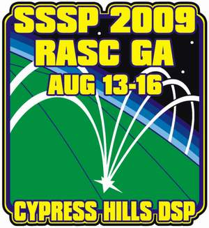
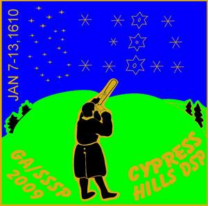

|


|
In August 2009, come to the Cypress Hills Dark Sky Preserve and do something never done before at an RASC General Assembly:
be armchair astronomers during the day and real astronomers at night! We are delighted that the 2009 RASC General Assembly has
been awarded to the Saskatoon Centre of the RASC. The 2009 GA will be held in conjunction with the Saskatchewan Summer Star Party.
2009 is also the International Year of Astronomy and the 2009 GA will be held, for the first time, at a dark sky site. It is our goal to provide
an affordable, memorable GA where participants can observe under some of the darkest skies in Canada, and still enjoy the traditional social
& business activities of a GA. What better place to hold the GA than at the Cypress Hills Dark-Sky Preserve, with light pollution abatement featured as one of IYA's themes? The GA will include all the activities of past GAs but will also include observing and clinics under magnitude 7+ skies! Cabin, condo and hotel rooms are available. There is also ample room for tents and powered RV sites. Planned day-time events include a BBQ, the Ruth Northcott Lecture, solar observing, an IYA "Galileo Moment", scientific presentations and poster sessions, a Wine and Cheese reception, the Fr. Lucien Kemble Lecture, Banquet, tours of the Maple Creek Winery and Fort Walsh, National Council meetings and Annual Meeting. CHIPP and the Cypress Hills DSP are located in southwestern corner of Saskatchewan 30km south of Maple Creek on Hwy 21. Nearest fly-in centres are Saskatoon, Regina, Calgary (and possibly Medicine Hat, AB). Centre Representatives who are planning to fly in for the weekend should book into Saskatoon (YXE) where they will be met, housed, fed and transported to and from the GA/SSSP 2009 by kind, friendly Saskatoon Centre chaperones. We will have some loaner telescopes and camping equipment available for reps that cannot bring their own. For those who can fly into Saskatoon on Tuesday August 11, we have arranged a tour of the Canadian Light Source (the "synchrotron") at the University of Saskatchewan campus on Tuesday evening. In previous years, some attendees have arrived at the Park in the week preceeding the SSSP to enjoy the dark skies in a nearly empty Meadows Campground. This year, the New Moon is on the 20th of the month, on the Thursday the week following the event. Dark skies to 02:00 (moonrise) are available starting the Sunday night of the GA/SSSP. We suggest that those who wish to enjoy the moonless dark skies of the Park stay later rather than come early. For more information, contact the GA/SSSP organizing committee at: sssp.sk@sasktel.net. |
August 7, 2009:
|
August 3, 2009:
|
August 2, 2009:
|
July 23, 2009:
|
July 15, 2009:
|
July 4, 2009:
|
May 13, 2009:
|
April 14, 2009:
|
April 8, 2009:
|
February 22, 2009:
|
December 1, 2008:
|
| Check back often for new developments. |
| We are pleased to announce our Featured Guest Speakers:
Check back often for new developments. |
We are pleased to announce our other guest speakers:
|
|
The Scientific Program consists of oral presentations and posters. The program starts Friday morning at 10:00a in the Wapiti Room. The Oral Presentation Program:
|
|
Registration is OPEN! Early registration ended Friday, July 3. Current registration rates:
Contact our registrars Rick Huziak and Kathleen Houston at:
GA/SSSP 2009 c/o Our downloadable REGISTRATION FORM is now available. Click here to download the Registration Form. Check back often for new developments. |
|
Most events take place in the
Resort's Wapiti Room (WR), Moose Room (MR), the Meadows Campground (MC), the Park
Amphitheatre (PA), outside the Park Pool (PP) or the Tennis Courts (TC). Thursday, August 13
Friday, August 14
Saturday, August 15
Sunday, August 16
|
The GA/SSSP kicks off with a BBQ at the Amphitheatre, featuring:
The cost for this event is $8/adult, $4/child. Check back often for new developments. |
The menu for the evening Supper Social includes:
The cost for this event is $11/person. A cash bar will be provided. No special prices for children.
We are limited to 200 people for this event. As of mid-July we are nearly fully booked for this event. If you have not reserved your place in the Supper Social, please do so as soon as possible. It is unlikely that any places will be available for at-the-door registrants. Check back often for new developments. |
|
The Resort catering staff will be serving a very special meal featuring Saskatchewan delicacies. The menu includes:
The cost for this event is $29/adult, $9/child 4-11 yrs, free/child under 4 yrs. We are limited to 250 people for this event. As of mid-July there were only 50 places left. These could be taken as early as the end of July. If you have not reserved your place in the Banquet, please do so as soon as possible. It is unlikely that any places will be available for at-the-door registrants. Check back often for new developments. |
Sunday Tour of Maple Creek Winery and Fort Walsh
|
A tour will be conducted to the Maple Creek Winery and Fort Walsh National Historic Site on Sunday following the RASC Annual Meeting.
Transportation, entry, lunch and supper are included in the cost.
Space is limited. The cost of the tour is $60/person. Check back often for new developments. |
|
Our room block in the Resort is now full. Since the Resort does not maintain a waiting list, our Registrars will be maintaining one and we will contact people on the list if accommodations come open due to a cancellation.
We will also try to connect people without accommodations with those who may wish to share their condos, cabins or hotel rooms. Please contact the GA/SSSP organizing committee
at: sssp.sk@sasktel.net.
To contact the Resort, phone: 306-662-4477. The Resort's website is being updated and is currently non-functional. We regret any inconvenience.
This year our room block runs from Wednesday through Saturday nights. For those who will not be camping and have yet to find accommodations, we suggest that you contact the following local hotels and motels (note that we cannot offer any guarantees on the quality of these accommodations nor does this list constitute an endorsement of any of the businesses):
Check back often for new developments. |
|
There is a lot of room to camp at the Meadows Campground, where all the observing will occur. ALL campsites in Meadows, including powered and unpowered sites, are RUSH: FIRST COME, FIRST SERVE from Thursday through Sunday. When you arrive at the Park, register at the Camping Office, self-identify yourself as a member of the GA/SSSP and tell the staff that you want to camp in the Meadows Campground. Pay the appropriate camping fees. If you are camping in the Meadows you must have a valid camping permit for a tenting or powered site. Note that the Campground Office will assign campsites only as you arrive. You will not be able to book ahead for any site within the Meadows for Thursday through Sunday. The on-line booking system for the Park will show the Meadows as completely full for those 4 days. There has been some confusion over this in the past, but the GA/SSSP follows standard park rules for use of the Meadows and does not receive any special deal or treatment. Please do not try to convince the Campground staff otherwise. If the park changes their policy in the future, so will the GA/SSSP. If you want to set up with the main group of participants you will want to set up in powered campsites #31, #33 through #65, camp in the unpowered open area of the Meadows or in the ~ 40 unpowered campsites within the trees on the west, east and south parts of the field, or anywhere on the open field. You cannot tent on a powered site unless you have paid the power fee. If you'd rather be secluded, you can chose a camping spot between the road and the trees: campsites #1 through #9, #25 through #30 & #38. GA/SSSP does NOT pay for anyone's camping or power - this is your responsibility. Park rules for the number of tents per site apply - check with the Campground Office for more information. Note that the Meadows is a slightly more rustic campsite with water taps, outhouses, fire-pits, picnic tables and both treed and open camping sites. There is no service centre in the Meadows campground. Service centres with showers and flush toilets are available at Rainbow and Terrace campgrounds, a 7-minute walk or 2-minute drive from Meadows. If you wish to come to the Park before the GA/SSSP starts, for example on Wednesday, you can book a limited number of sites, the "Reserve-a-Site" campsites #10 through #24. They are located between the road and trees. These can be booked in advance Monday to Friday during regular business hours, but they are away from the main group of observers. If you wish to keep that site through the GA/SSSP weekend, you will have to self-identify yourself as a member of the GA/SSSP. Contact the Reserve-a-Site office at 306-662-5484. You can always set up your telescope in the main field and just leave it set up for the duration, and still camp away from the group. Meadows rates are:
These rates are current as of January 1, 2009. For current rates, check the Saskatchewan Parks website at http://www.tpcs.gov.sk.ca/fees. Due to space and power capacity requests, we request that those who occupy a powered site share their power plugs & possibly allow tenting on the corners of your site. You may run extension cord from the power pole, but you should offer a "sublet" fee to whoever is renting the power. Do not exceed the power rating of the breaker. CHIPP allows you to set up an equipment tent free of charge if you are staying in the resort or camping away from the Meadows. If you do this you must place a note on the tent that states equipment tent only - no campers or else park permit staff may insist you pay the tenting fee. Any disputes over payment of camping frees are between YOU and CHIPP. Park personnel may check camping permits at any time. To obtain further information about the park, visit their website at: http://www.tpcs.gov.sk.ca/CypressHills. Below are shown two drawings of the Meadows campsite.
  Check back often for new developments. |
|
A number of tents, sleeping bags and foamies will be available at a nominal fee for the weekend for those travelling in by plane.
Please try to bring your own sleeping bags and air mattresses, if possible. A number of telescopes will be available, for a nominal
fee. However, you must bring your own eyepieces. Check back often for new developments. |
|
If you fly into Saskatoon, we can transport you to the Park on Wednesday August 12th. We will transport you either by volunteer in their vehicle
or on our mini-bus. We can provide transportation back to Saskatoon on Monday August 17th. A fee of $25 each way pays for the bus rental and gas or the volunteer's gas. GA/SSSP will pay drivers from your fee.
Indicate on your registration form if you need a ride. Contact our registrars if you have any questions about the arrangements. Check back often for new developments. |
|
The GA/SSSP is held in a provincial park, thus provincial park entry fees apply to your stay.
Pay at the park gate as you enter. Park entry fees: (Fees are current as of February, 2009. For current fees, check the Saskatchewan Parks website at http://www.tpcs.gov.sk.ca/fees.)
Check back often for new developments. |
We will have two sessions of scientific talks and a poster session where delegates can share their astronomical experiences,
data and insights. All levels of astronomical topics are acceptable and encouraged. Please try to make your material accessible
to as wide an audience as possible. To participate please submit a proposal by e-mail to Gordon Sarty
gordon.sarty@usask.ca and in that proposal please include:
|
Starry, Starry Night Art, Quilt and Poetry Exhibition
This astronomy-themed art exhibition is open to kids (4-12 years), youth (13-17) and adults. Art created by the exhibitor is welcome
in the following categories: quilt, cross-stitch, poetry, drawing, painting, collage, and any photograph not in the photography contest.
|
Shirt prices are as follows:
The shirt background colour will be navy blue. The shirt logo design is shown below. This logo will be on the left chest. The IYA logo will be on the right shoulder.  Check back often for new developments. |
|
GA/SSSP 2009 pins will be available at $7/pin. A limited number of pins from previous years will be available at a reduced price. The pin design is shown below:  Check back often for new developments. |
|
1. There will be four categories:
2. Only one photograph per category can be entered by the same individual. 3. A photograph can be entered in only one of the four categories 4. Winning photographs entered in the contest from previous years cannot be entered again. |
The major door prizes are awarded by drawing names out of a container. The following rules apply to the major door prize awards. These rules will be strictly followed.
|
|
|
Check back often for new developments. |
|
This year we have something special for observers at the Meadows Campground: the "Kemble's Cascade Cafe." From 21:00 to 03:00 on Thursday, Friday and
Saturday nights beside the Registration Tent, we will be serving hot food and refreshments. The menu will be as follows (subject to
change without notice):
|
|
The GA/SSSP is a Red-Light Only Zone from sundown to sun-up. We are not unique: all star parties insist on no white lights to preserve night vision for participants. If you are a new attendee or do not understand these regulations, ask a star party organizer for assistance. White light flashlights are NOT allowed! Use only red filtered flashlights, and keep them as dim as possible. Please make sure to have your car parked in its final resting position well before darkness sets in. If you do not intend to remain in the Meadows all night long, park and set up near to the entrance gate so you can leave without blinding everybody! Cars are to use their park-lights only, or be lead with their lights off by someone with a red flashlight. (This is not advised for safety reasons and to be used only in an emergency). Gate security people will have a limited supply of red flags to cover car lights. Cover the following lights: interior, back-up, license plate, trunk and headlights. Gate security people will tape red flags your vehicle lights at the gate as you arrive. Please cover windows on RVs as not to accidentally have a family member flash the crowd with white light. The most common offending light issues with vehicles are interior dome lights and uncovered backup lights coming on unexpectedly. Red and green lasers are permitted. Do not point them horizontally at people or trailers! Lasers will not show on astrophotos unless they are held in the same place for many seconds. Use them sparingly. Lasers will be used extensively during the scheduled starwalks from 10:00 p.m. to 11:00 p.m Friday and Saturday night. Check back often for new developments. |
Vendor On-Site Policy at GA/SSSP
|
The GA/SSSP Committee welcomes astronomy (and related) dealers to set up booths at the GA/SSSP. At this event you have the potential to reach nearly 300 astronomy enthusiasts just looking to buy something. To participate, you are asked to follow the standard registration procedure - i.e. vendors must register as normal participants at the normal costs for the star party. You may in turn sell and conduct normal business within the Meadows campground (but due to Park restrictions cannot solicit elsewhere in the park.) The GA/SSSP is not responsible for any of the vendor's business costs (transportation, accommodation, living, etc.) Vendors are responsible for their own arrangements, park entry and must pay standard camping fees (to the Park) and camp site power if needed, if staying in the Meadows. The GA/SSSP is not responsible for any merchandise loss or damage. As registered GA/SSSP star party goers, all vendors are welcome to participate in all activities they have registered for. If you would like to donate a door prize, this will be graciously accepted & will be accordingly acknowledged, though a door prize donation is not required and is at the discretion of the vendor. Vendors will receive a free 1/4-page ad in the star party handout literature or for $25 can purchase a full-page ad. (Ads in the GA/SSSP handout are gray-scale photocopied and are not in colour). Alternately, the GA/SSSP will pre-package vendor-supplied product brochures in our registration folders for 25 cents per copy. Approximately 120 registration packages are handed out. Vendor must provide the ad or the product brochures at least 2 weeks prior to the star party. (Mail to or contact the Registrars). In a further attempt to foster this on-going good will, all star party vendors will be entitled to two separate half-page ads (or equivalent - e.g. four 1/4-page ads) in our monthly newsletter, over the coming year. These ads are at no additional cost. Our current newsletter circulation is approximately 80 copies, but these are highly targeted readers & the newsletters are also on-line. All ads are subject to approval by the Saskatoon Centre Executive before inclusion in the newsletter. We will do our best to publish the ad in the month desired, but this is also subject to available space within the newsletter. Check back often for new developments. |
|
The GA/SSSP will offer complete refunds for registration costs and prepaid activities, without a handling fee, to participants who wish to withdraw from the GA/SSSP prior to the start of the star party and for no-show participants except as follows. GA/SSSP cannot refund the prepaid banquet costs within 48-hours of the banquet (ie. after 5:00 p.m. on the preceding Thursday) since the GA/SSSP locks in their banquet costs to the Resort at that time. If shirts are pre-ordered, the GA/SSSP may not be able to cancel shirt orders within 3 weeks of the star party. If possible, refunds for shirts will be made, but if cancellation is not possible, shirts will be mailed out at the withdrawing participant’s cost after the star party. No shows are defined as those who have not registered by the end of registration period on the Saturday afternoon of the star party. However, banquet tickets are always in demand right up to the starting minute of the banquet! There is almost always a waiting list since banquet seating space is limited. If you have not made previous arrangements and find that at the last minute you cannot come to the star party or cannot attend the banquet, please telephone us at 306-343-9836 or 306-222-0515 (star party cells) and let us know if you will release your banquet tickets for resale. If we can resell your banquet tickets, we will refund the entire cost to you, even within the 48-hour no-refund window. Someone at the star party will be delighted that you thought of them! Otherwise, your tickets will be held for you assuming you will show up at the last minute and are thus not otherwise refundable. Check back often for new developments. |
|
If you have not been to the Cypress Hills Inter-provincial Park,
you are missing something! This is a beautiful park, nested in
Lodgepole pines on a butte that reaches 1460 meters above sea level,
and is the highest point in Canada between the Rockies and Labrador.
(Because of the altitude - bring warm clothes for night time!) Its
unique position gives it an unusual weather advantage. Historical
weather maps published by Jay Anderson in the RASC Observer's
Handbook indicate that the area around Cypress Hills has the best
chance for clear skies (less than 30 percent mean nighttime cloud
cover) in July and August compared to any other site in Canada. Also,
no mosquitos! The park is very modern and well equipped for families of tired astronomers. The park features a lake, hiking trails, paddle boats, mini golf, regular golf, a general store, a full resort, two restaurants, an ice-cream and snack shop, a souvenir shop, moose and other varmints (no snakes or big cats), ball diamonds, picnic grounds, tennis courts, an outdoor heated pool, hot tub, a museum and of course, the GA/SSSP! More on the park is found at: http://www.tpcs.gov.sk.ca/CypressHills.
|